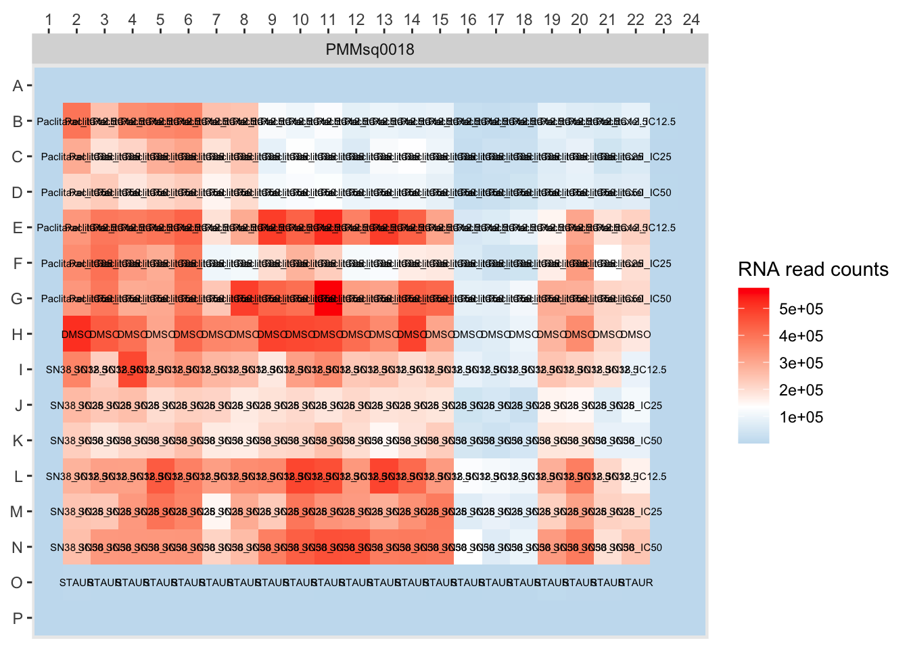

Last updated: 2024-09-11
Checks: 7 0
Knit directory: MACseq-SPLINTR-Project/
This reproducible R Markdown analysis was created with workflowr (version 1.7.1). The Checks tab describes the reproducibility checks that were applied when the results were created. The Past versions tab lists the development history.
Great! Since the R Markdown file has been committed to the Git repository, you know the exact version of the code that produced these results.
Great job! The global environment was empty. Objects defined in the global environment can affect the analysis in your R Markdown file in unknown ways. For reproduciblity it’s best to always run the code in an empty environment.
The command set.seed(20240802) was run prior to running
the code in the R Markdown file. Setting a seed ensures that any results
that rely on randomness, e.g. subsampling or permutations, are
reproducible.
Great job! Recording the operating system, R version, and package versions is critical for reproducibility.
Nice! There were no cached chunks for this analysis, so you can be confident that you successfully produced the results during this run.
Great job! Using relative paths to the files within your workflowr project makes it easier to run your code on other machines.
Great! You are using Git for version control. Tracking code development and connecting the code version to the results is critical for reproducibility.
The results in this page were generated with repository version cbf5e6f. See the Past versions tab to see a history of the changes made to the R Markdown and HTML files.
Note that you need to be careful to ensure that all relevant files for
the analysis have been committed to Git prior to generating the results
(you can use wflow_publish or
wflow_git_commit). workflowr only checks the R Markdown
file, but you know if there are other scripts or data files that it
depends on. Below is the status of the Git repository when the results
were generated:
Ignored files:
Ignored: .DS_Store
Ignored: .Rhistory
Ignored: .Rproj.user/
Ignored: data/.DS_Store
Ignored: data/DEgenes/
Ignored: data/enrichedPathways/
Ignored: data/rObjects/
Untracked files:
Untracked: analysis/Untitled.Rmd
Untracked: analysis/org38_SPLINTR.Rmd
Unstaged changes:
Modified: analysis/DGE_VPathwaysEnrichment.Rmd
Modified: analysis/_site.yml
Note that any generated files, e.g. HTML, png, CSS, etc., are not included in this status report because it is ok for generated content to have uncommitted changes.
These are the previous versions of the repository in which changes were
made to the R Markdown (analysis/QC_Analysis.Rmd) and HTML
(docs/QC_Analysis.html) files. If you’ve configured a
remote Git repository (see ?wflow_git_remote), click on the
hyperlinks in the table below to view the files as they were in that
past version.
| File | Version | Author | Date | Message |
|---|---|---|---|---|
| Rmd | da219c1 | kitadalvi | 2024-08-08 | initial commit |
| html | da219c1 | kitadalvi | 2024-08-08 | initial commit |
#import metadata
metadata<-read.csv("/Volumes/bioinf/home/ndalvi/MACseq_PMC228/metadata/PMC228.csv",header=T) %>%
arrange("Barcode") %>%
mutate(id=gsub("Plate","",Plate_ID)) %>%
mutate(Treatment_conc=paste0(Treatment_1,"_",Concentration_1))
head(metadata) Plate_ID Well_ID Row Column Species Cell_type Model_type Time Unit
1 PMMsq0018 A01 A 1 Human NA
2 PMMsq0018 A02 A 2 Human NA
3 PMMsq0018 A03 A 3 Human NA
4 PMMsq0018 A04 A 4 Human NA
5 PMMsq0018 A05 A 5 Human NA
6 PMMsq0018 A06 A 6 Human NA
Treatment_1 Concentration_1 Unit_1 Sample_type Barcode Organoid Labelled
1 NA AACAAGGTAC
2 NA AACACCTAGT
3 NA AATCCTACCA
4 NA AATGAACACG
5 NA ACGCCTTCGT
6 NA ACGGTCCGTT
id Treatment_conc
1 PMMsq0018 _
2 PMMsq0018 _
3 PMMsq0018 _
4 PMMsq0018 _
5 PMMsq0018 _
6 PMMsq0018 _#load in count data
raw_counts <- Read10X(data.dir = '/Users/dalvinikita/Documents/MACseq_PMC228/raw/PMC228/starsolo/SA_PMC228-null.Solo.out/Gene/raw')
#filter by cpm>10 in at least 2 samples
keep <- rowSums(cpm(raw_counts)>10) >= 2
raw_counts <- raw_counts[keep,]
dim(raw_counts)[1] 16595 384Warning: Feature names cannot have underscores ('_'), replacing with dashes
('-')Warning: Default search for "data" layer in "RNA" assay yielded no results;
utilizing "counts" layer instead.
| Version | Author | Date |
|---|---|---|
| da219c1 | kitadalvi | 2024-08-08 |
tidyseurat says: Key columns are missing. A data frame is returned for independent data analysis.
| Version | Author | Date |
|---|---|---|
| da219c1 | kitadalvi | 2024-08-08 |
R version 4.4.0 (2024-04-24)
Platform: aarch64-apple-darwin20
Running under: macOS Sonoma 14.4.1
Matrix products: default
BLAS: /Library/Frameworks/R.framework/Versions/4.4-arm64/Resources/lib/libRblas.0.dylib
LAPACK: /Library/Frameworks/R.framework/Versions/4.4-arm64/Resources/lib/libRlapack.dylib; LAPACK version 3.12.0
locale:
[1] en_US.UTF-8/en_US.UTF-8/en_US.UTF-8/C/en_US.UTF-8/en_US.UTF-8
time zone: Australia/Melbourne
tzcode source: internal
attached base packages:
[1] stats4 stats graphics grDevices utils datasets methods
[8] base
other attached packages:
[1] gg.layers_0.1.3 ggrepel_0.9.5
[3] gridExtra_2.3 reshape2_1.4.4
[5] variancePartition_1.35.4 RUVSeq_1.39.0
[7] EDASeq_2.39.0 ShortRead_1.63.0
[9] GenomicAlignments_1.41.0 Rsamtools_2.21.0
[11] Biostrings_2.73.1 XVector_0.45.0
[13] BiocParallel_1.39.0 edgeR_4.3.7
[15] limma_3.61.7 DESeq2_1.45.3
[17] SummarizedExperiment_1.35.1 Biobase_2.65.0
[19] MatrixGenerics_1.17.0 matrixStats_1.3.0
[21] GenomicRanges_1.57.1 GenomeInfoDb_1.41.1
[23] IRanges_2.39.2 S4Vectors_0.43.2
[25] BiocGenerics_0.51.0 tidyseurat_0.8.0
[27] ttservice_0.4.1 gtools_3.9.5
[29] Seurat_5.1.0 SeuratObject_5.0.2
[31] sp_2.1-4 lubridate_1.9.3
[33] forcats_1.0.0 stringr_1.5.1
[35] dplyr_1.1.4 purrr_1.0.2
[37] readr_2.1.5 tidyr_1.3.1
[39] tibble_3.2.1 ggplot2_3.5.1
[41] tidyverse_2.0.0 workflowr_1.7.1
loaded via a namespace (and not attached):
[1] R.methodsS3_1.8.2 progress_1.2.3 ggpp_0.5.8-1
[4] gggrid_0.2-0 goftest_1.2-3 vctrs_0.6.5
[7] spatstat.random_3.3-1 digest_0.6.36 png_0.1-8
[10] corpcor_1.6.10 git2r_0.33.0 deldir_2.0-4
[13] parallelly_1.38.0 MASS_7.3-61 httpuv_1.6.15
[16] withr_3.0.1 xfun_0.46 ellipsis_0.3.2
[19] survival_3.7-0 memoise_2.0.1 zoo_1.8-12
[22] pbapply_1.7-2 R.oo_1.26.0 prettyunits_1.2.0
[25] KEGGREST_1.45.1 promises_1.3.0 httr_1.4.7
[28] restfulr_0.0.15 globals_0.16.3 fitdistrplus_1.2-1
[31] ps_1.7.7 rstudioapi_0.16.0 UCSC.utils_1.1.0
[34] miniUI_0.1.1.1 generics_0.1.3 processx_3.8.4
[37] curl_5.2.1 zlibbioc_1.51.1 polyclip_1.10-7
[40] GenomeInfoDbData_1.2.12 SparseArray_1.5.27 fftwtools_0.9-11
[43] xtable_1.8-4 evaluate_0.24.0 S4Arrays_1.5.5
[46] BiocFileCache_2.13.0 hms_1.1.3 irlba_2.3.5.1
[49] colorspace_2.1-1 filelock_1.0.3 polynom_1.4-1
[52] ROCR_1.0-11 reticulate_1.38.0 spatstat.data_3.1-2
[55] magrittr_2.0.3 lmtest_0.9-40 later_1.3.2
[58] lattice_0.22-6 spatstat.geom_3.3-2 future.apply_1.11.2
[61] getPass_0.2-4 scattermore_1.2 XML_3.99-0.17
[64] cowplot_1.1.3 RcppAnnoy_0.0.22 pillar_1.9.0
[67] nlme_3.1-165 iterators_1.0.14 pwalign_1.1.0
[70] caTools_1.18.2 compiler_4.4.0 RSpectra_0.16-2
[73] stringi_1.8.4 tensor_1.5 minqa_1.2.7
[76] plyr_1.8.9 crayon_1.5.3 abind_1.4-5
[79] BiocIO_1.15.0 gridGraphics_0.5-1 ggtext_0.1.2
[82] locfit_1.5-9.10 terra_1.7-78 bit_4.0.5
[85] whisker_0.4.1 codetools_0.2-20 ggpattern_1.1.1
[88] bslib_0.8.0 plotly_4.10.4 remaCor_0.0.18
[91] mime_0.12 splines_4.4.0 Rcpp_1.0.13
[94] fastDummies_1.7.3 dbplyr_2.5.0 interp_1.1-6
[97] gridtext_0.1.5 knitr_1.48 blob_1.2.4
[100] utf8_1.2.4 lme4_1.1-35.5 fs_1.6.4
[103] listenv_0.9.1 Rdpack_2.6 ggplotify_0.1.2
[106] Matrix_1.7-0 callr_3.7.6 statmod_1.5.0
[109] tzdb_0.4.0 fANCOVA_0.6-1 pkgconfig_2.0.3
[112] tools_4.4.0 cachem_1.1.0 rtrend_0.1.5
[115] RhpcBLASctl_0.23-42 rbibutils_2.2.16 RSQLite_2.3.7
[118] viridisLite_0.4.2 DBI_1.2.3 numDeriv_2016.8-1.1
[121] fastmap_1.2.0 rmarkdown_2.27 scales_1.3.0
[124] grid_4.4.0 ica_1.0-3 broom_1.0.6
[127] sass_0.4.9 patchwork_1.2.0 dotCall64_1.1-1
[130] RANN_2.6.1 farver_2.1.2 aod_1.3.3
[133] yaml_2.3.10 latticeExtra_0.6-30 rtracklayer_1.65.0
[136] cli_3.6.3 leiden_0.4.3.1 lifecycle_1.0.4
[139] uwot_0.2.2 mvtnorm_1.2-5 backports_1.5.0
[142] timechange_0.3.0 gtable_0.3.5 rjson_0.2.21
[145] ggridges_0.5.6 progressr_0.14.0 parallel_4.4.0
[148] jsonlite_1.8.8 RcppHNSW_0.6.0 bitops_1.0-8
[151] bit64_4.0.5 Rtsne_0.17 yulab.utils_0.1.5
[154] spatstat.utils_3.0-5 highr_0.11 jquerylib_0.1.4
[157] spatstat.univar_3.0-0 R.utils_2.12.3 pbkrtest_0.5.3
[160] lazyeval_0.2.2 shiny_1.9.1 htmltools_0.5.8.1
[163] sctransform_0.4.1 rappdirs_0.3.3 glue_1.7.0
[166] spam_2.10-0 httr2_1.0.2 RCurl_1.98-1.16
[169] rprojroot_2.0.4 jpeg_0.1-10 EnvStats_2.8.1
[172] boot_1.3-30 igraph_2.0.3 R6_2.5.1
[175] gplots_3.1.3.1 labeling_0.4.3 ggh4x_0.2.8
[178] GenomicFeatures_1.57.0 cluster_2.1.6 nloptr_2.1.1
[181] DelayedArray_0.31.10 tidyselect_1.2.1 xml2_1.3.6
[184] AnnotationDbi_1.67.0 future_1.34.0 munsell_0.5.1
[187] KernSmooth_2.23-24 data.table_1.15.4 htmlwidgets_1.6.4
[190] aroma.light_3.35.0 RColorBrewer_1.1-3 hwriter_1.3.2.1
[193] biomaRt_2.61.2 rlang_1.1.4 spatstat.sparse_3.1-0
[196] spatstat.explore_3.3-1 lmerTest_3.1-3 fansi_1.0.6